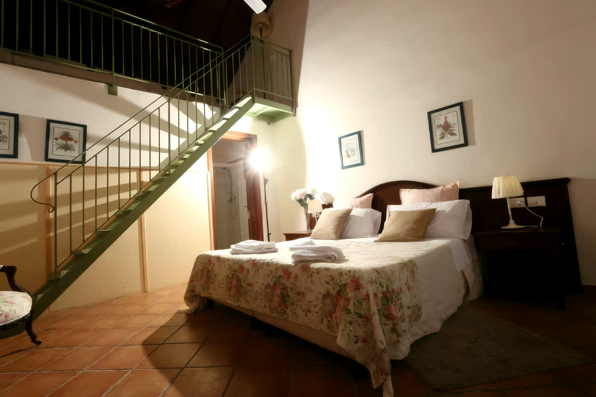

Da 1 a 2 ospiti
Camera Doppia
Letto matrimoniale oppure due letti separati, con vista sul mare e sull'Etna e area esterna attrezzata.
- Wi-Fi
- Aria condizionata
- TV
- Mini bar
- Tea set
- Cassaforte
- Set di cortesia
- Piscina
- Parcheggio